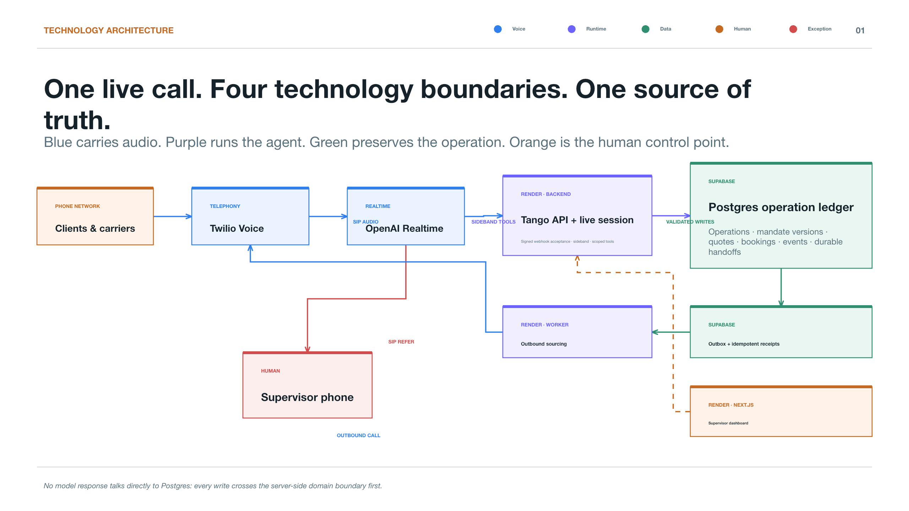

A carrier asks to move a booking outside the active mandate.
The backend rejects an out-of-bounds commitment even if the voice agent is willing to negotiate.
Escalation createdcaller transferred
Tango coordinates freight by phone, but it never lets a model write operational truth on its own. The backend validates the current mandate, preserves every commitment and hands ambiguity to a human.

Each map is a complete operational path. Move across the five tabs to see where the agent can act, where server-side validation has to intervene, and when the supervisor receives the line.
The worker makes the calls; the backend validates the decision and emits an auditable handoff.

The inbound leg resolves the operation, verifies the authority, then changes or escalates.

The current version determines what Tango may negotiate; the prior version remains in the ledger.

Tango records who requested it, evaluates the current booking and leaves a complete trace for the supervisor.

The system creates an escalation, resolves the configured active recipient and transfers the caller by SIP REFER.

These are the pressure tests we can rehearse live. They are not a happy-path footnote; each maps to durable state, a bounded decision, or a human handoff.
The backend rejects an out-of-bounds commitment even if the voice agent is willing to negotiate.
Escalation createdThe new mandate is versioned; subsequent decisions read the new authority instead of overwriting history.
New mandate versionThe outbox and idempotent receipts let the worker resume without duplicating a booking or losing the event.
Safe retryThe outbound destination is read from the managed handoff directory, so the active recipient takes the call.
Live directory lookupThis atlas is a static page: no account, no app permission and no presenter mode. The PDFs below remain useful as a downloadable pre-flight package or an appendix for judge questions.